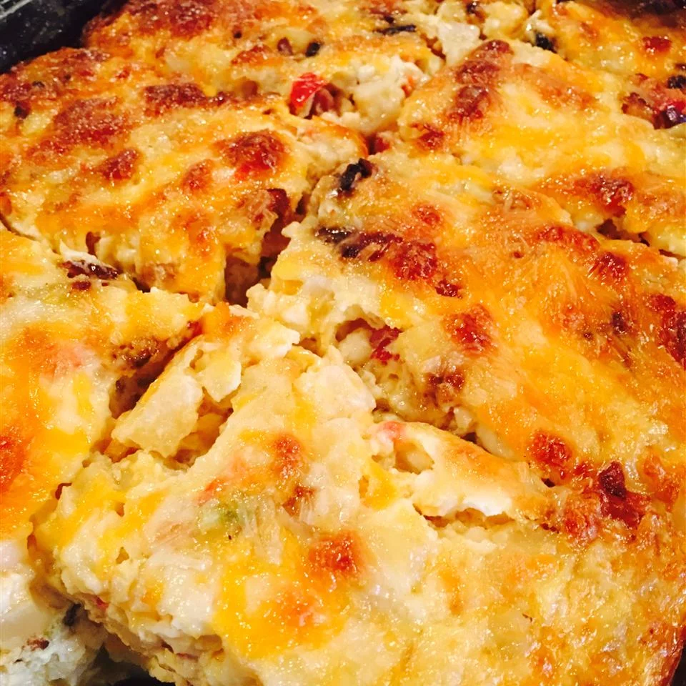

Cheesy Amish Breakfast Casserole Recipe

Description
This is a hearty, Amish-inspired breakfast dish that is simple to make and serves a large crowd.
The combination of classic breakfast staples like bacon, hashbrowns and eggs with gooey cheese is sure to
make this a family favorite.
The total cook time is around an hour and fifteen minutes. The dish serves up to twelve people using the
proportions in this recipe.
Ingredients
- 1 pound bacon, sliced
- 1 sweet onion, chopped
- 4 cups frozen shredded hash brown potatoes, thawed
- 9 eggs, lightly beaten
- 2 cups shredded Cheddar cheese
- 1.5 cups small curd cottage cheese
- 1.25 cups shredded Swiss cheese
Steps
- Preheat oven to 350 degrees F (175 degrees C). Grease a 9x13-inch baking dish.
- Heat a large skillet over medium-high heat; cook and stir bacon and onion until
bacon is evenly browned, about 10 minutes. Drain. Transfer bacon and onion to a
large bowl. Stir in potatoes, eggs, Cheddar cheese, cottage cheese, and Swiss cheese.
Pour mixture into prepared baking dish.
- Bake in preheated oven until eggs are set and cheese is melted, 45 to 50 minutes. Let
stand 10 minutes before cutting and serving.